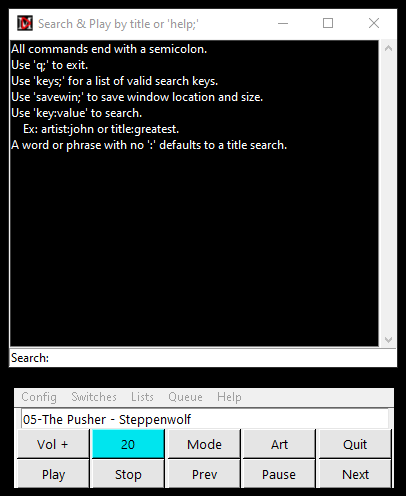
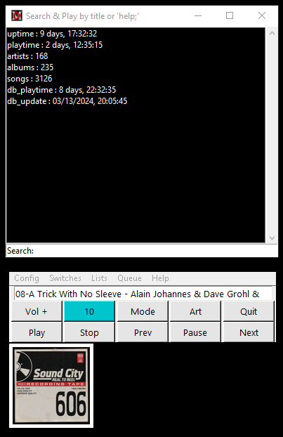

This help file was updated for the v24.11.1 release. As of v2.0.8 the same Python code runs in Linux without needing any tweaks.
I recommend reading the First Run Process section below before installing. Of course, that assumes you're reading this on Github before you downloaded and installed MMC4W.
MMC4W is first and foremost Minimal. That may be a little misleading, because it does quite a lot. The GUI is minimal so as to quietly go about its business. This is about the music. That was the original point of this exercise.
MMC4W is a MPD Client. To be clear, you must have access to a running MPD server for this app to be of any value to you.
MMC4W is open source, and does not send any data out to anyone anywhere. It connects only to the MPD server you specify in the configuration file. (mmc4w.ini)
The interface contains the basic required buttons to control a MPD server:
MMC4W ships with a blank .ini file. The first time you run it, it will pop up a box like this:
When you press the 'OK' button, mmc4w opens mmc4w.ini using the default system text editor. On my system it's Notepad++ on Windows and Xed on Linux. Word processors like Microsoft Word should be avoided. Only use a text editor that edits and saves plain ASCII text. Notepad or Nano are perfectly fine for this job.
You need to type in your preferred MPD servers' IP address(es) in the [basic] section as shown.

If you have more than one server, just string those IP addresses together as seen there.
After typing your server IP address(es) in the [basic] section, save and close the file.
Restart MMC4W. When it starts, you will get a dialog showing you the first IP address you provided. If the connection is not successful, an error will be displayed. In this case, you'll need to verify your server's IP address is correctly entered into mmc4w.ini file. The process opens mmc4w.ini for editing.
Once you have a valid server IP under the serverlist key of the basic section, run MMC4W again.
The first time you run MMC4W, it runs with titlebars on. You can move and size the windows to your liking. When you have things to your liking, hit the mode button. If you are running in Linux, mmc4w.py will exit. Restart the app.
There are small differences in the way window managers go about their business. In the Windows world, there is one window manager (WM). In the Linux world there are more. The end result is you can't be exactly sure how a particular distribution of Linux will behave with mmc4w.py until you try it.
I'm using mmc4w.py on Linux Mint using Cinnamon desktop. 'wmctrl -m' returns "Mutter (Muffin)" which I assume is the name of the WM.
Here are some things I noticed running it thus:
For these reasons, in Linux I leave the titlebars on most of the time. These are aesthetic problems, not functional. I really am not too concerned about them.
My Linux machine is a Dell Inspiron 13-7378. It has a 13-inch display at 1080p. In order to be able to read text on this screen, the recommended scaling factor is 125% or 150%. I have it set at 125%.
When MMC4W first opens the first time, the windows are way too small. I wanted a way to quickly fix that problem, so I worked out a system that works here. More tests would be appreciated.
At first start, I resize the main window by grabbing the upper left corner and dragging it out until all of the buttons are JUST exposed.
Now the other windows you open should have some sane dimensions. Tweak as you wish.
My wish for you: May you be free of display scaling.
When you hit Play, whatever is loaded in the server's queue will start to play. In the text bar of the app you will see "Joined Server Queue". This is because there is no way to know the name of the playlist that was last loaded into the queue on the server. MMC4W tracks the last playlist you loaded, but MPD does not keep track of it. You can choose to let things slide, or you can select one now. If you choose one, you can choose to load it into the queue, or just remember it for later.

Click on the Lists menu and select "Select a Playlist". Once you've clicked on a playlist, you can hit the 'Play' button.

After you press 'Play', just kick back and enjoy the music.
MMC4W will show you these basic statistics, alternating between the two lines of text shown in these two images:
 Track number, Track name and Artist.
Track number, Track name and Artist.
 Server, Play Status, PlayList and Elapsed-vs-Duration in seconds.
Server, Play Status, PlayList and Elapsed-vs-Duration in seconds.
Random, rePeat, Single and Consume status is shown here. A capital letter means 'ON', lower case means 'OFF'. 'P' is for rePeat because you can't have two 'R's.

The 'Art' button toggles the small album art window.
The 'Mode' button toggles the titlebar like this:

When the titlebars are on, you can drag the windows around. (You will likely have to expand the art window a bit). Where you leave the upper-left corners gets saved when you press 'Mode' again. Your windows will stay there until you press 'Mode' again.
The default out-of-the-box values are saved in the mmc4w.ini file at the bottom. Use those in case things get out of hand.
The current queue contains songs that were loaded from a saved playlist, or are the results of searches made from the database as described in the next section.
The Queue menu has a 'Search and Play' option. If you select that option, it opens a window containing a sorted list of all the songs in the current queue.
You can jump to a specific song by entering a word that you expect to find in the title. A list of songs in the queue containing that word are displayed. Click the one you want.
You can also search using key:value pairs. For example, to list songs by The Allman Brothers, type "artist:allman" without quotes. You'll see a list of their songs. To search by album name, type "album:greatest". That will return a list of all albums with 'greatest' in their name.
These searches are not case-sensitive.
Type q; to close the window without making a selection. The semicolon is required.
There are three options under the 'Lists' menu related to search.
All three options use the same window, just differently. There's a 'mode' hint in the titlebar to help you out.
The search windows support a limited set of commands. The command 'help;' (with the semicolon, but not the quotes) gets you this screen:
The Search help screen.
Anywhere you see a Search: bar, you can use colon-separated key:value pairs for searching. For example: album:hits, or artist:david. These are not case-sensitive. It may seem like the three menu options are not needed, but they do still have value. A single-word search will produce results of the default type in each of them.
Note: The Search window is resizeable. If you want, type 'savewin;' in the Search: bar to save size and placement.
Play a Single opens the Search window and allows you to type some search term. This is a Title search. If any song title in the entire library contains the search term, it will be displayed when you press [enter].
 Song title search.
Song title search.
When you click on one of them, it plays that one title then stops. Use another 'Lists' menu option to do something else.
Play an Album opens the same Search window. This time you are searching for text contained in Album names.
Clicking on a list entry loads up the songs on that album and plays them sequentially, first to last. You will notice the text area turns blue with white text. That is the visual indicator that Random Mode has been turned off.
 True Blue Album Mode.
True Blue Album Mode.
I call this "True Blue Album Mode". The album title takes the place of a playlist name while this is playing.
NOTE: Random mode will remain off after the album finishes. Use the 'Switches' menu to turn Random playback on when you want it. No assumptions are made about whether you want random or sequential playback outside of Album Mode.
Find by Artist opens the Search window, but this time you are searching by Artist name. Keep in mind this is the name as it appears in your music library.
 Artist search. Hit Enter for all songs.
Artist search. Hit Enter for all songs.
If you click in the Search: field and just press [enter], you'll get a list of all your songs ordered by Artist. This can be useful when you don't know what you're looking for. Otherwise, type in some text to filter your list.
Saved playlists are the heart of MMC4W. To differentiate between saved playlists and the list of songs currently being played, the latter is called "the queue". Playlists are lists of songs saved to a file on disk with some meaningful name.
You load playlists into the queue and then MPD plays that queue using the settings in force at the moment.
MMC4W will create a special playlist called "Everything" that contains all the songs in your library. That option is found in the 'Lists' Menu.
If you want to get a playlist out of the MPD server and onto your local computer, look in the Queue menu for the option to save the queue to a .m3u file. The saved file will have an Artist/Album/Track format. Note that this has only been tested with a curated library of songs with complete metadata. If the library on the server is missing some metadata, it's a good bet it will have a unwanted effect.
MMC4W lets you add songs to playlists as you go. No need to stop playback.
1) Use the Toggle PL Build Mode option in the Queue Menu to turn on PL Build Mode.

A window opens titled "Playlists With and Without Current Song". Playlists containing the current song are on the left, ones without the current song are on the right. This window updates each time a new song starts.
You can move and resize that window to suit your tastes. When you exit PLBuild Mode, your size and position settings are saved to the mmc4w.ini file.

2) If the music isn't already playing, hit Play. Two sets of playlists are displayed, those with this song on the left, and those without it on the right.
3) If you want to add the current song to a playlist, click on the playlist name in the right list box. The playlist name will move to the left and the current song will be added.
NOTE: If you press Quit while in PLBuild Mode, MMC4W first turns PLBuild Mode off, then exits.
It's just that easy.
1) In PL Build Mode, when you hear a song you want to remove, click the playlist name in the left window.
2) The playlist name will move to the right and song will be gone from the saved playlist.
You can be intentional:
Use the Play a Single, Play an Album, or Find By Artist options under the Look menu to play a specific song or album.
When it's playing, select the playlist to add or delete the current song from that playlist.

This was something I just didn't want to do without.
MPD has the option of serving an audio stream over HTTP. If the server is configured this way, you'll see the output listed by using the "File / Toggle an Output" option.
MMC4W offers basic support for MPD streams using HTTP. Note that is not HTTPS. That may make a difference.
In order to get the stream, you will have to know what port the server is using. MMC4W comes with port 8000 set in the mmc4w.ini configuration file. That is the default in the MPD server config file, but people often change it. You'll have to put the correct httpd port in the [serverstats] section of the mmc4w.ini file.

If an HTTP output is enabled, and music is playing, you can hear it through your system's default browser. The "Launch Browser Player" option under the 'Queue' menu will start the playback if everything is on and running. Simply close the browser or tab to stop it. The server's playback is not affected. Other people listening to that stream will continue to hear it.
Be aware: this method of listening has its drawbacks. You have to deal with buffering, network latency, lack of real controls, etc. But under some circumstances, this may be an acceptable way to listen to your music. I find myself using this method more frequently these days.
The "AutoBrowserPlayer" setting might interest you if you regularly use the BrowserPlayer. If you set this to 1 ('1' is ON), when you start MMC4W, if there is an active stream on the configured server, the browser will be called to play it. Set the 'autobrowserplayer' to 0 to disable that behavior.
If you press Stop, the http stream stops. This may cause browsers to close the connection. If so, when you restart playback you'll need to refresh the browser window to regain the connection. So will everyone else listening to that stream. It's probably a good idea to avoid using the Stop button if there is more than one person listening to the http stream. Better safe than sorry.
Logging can be enabled by using the 'Toggle Logging' option under the Config menu.

After using the 'Toggle Logging' option, restart MMC4W.
MMC4W currently supports two levels of logging: INFO and DEBUG. INFO lists basic actions that should be occurring as they occur. DEBUG adds another layer of potentially useful data to the stream.

To set the logging level, use the 'Configure' option and edit the mmc4w.ini file. Type either 'info' or 'debug' where indicated (without quotes).
The resulting log file (mmc4w.log) can be found in the _internal folder in the installation folder. The log file is deleted and started fresh each time you start MMC4W. If you toggle Off logging, the last log file will remain until you delete it or create a new one by toggling logging On again.
The DEBUG file (mmc4w_DEBUG.log) does not start fresh with each run, and is not deleted. If you make the mistake of leaving MMC4W with debug logging turned on, that log file will continue to grow until you run out of disk space. Don't be that guy. Turn debug logging off when you don't need it.
Under the 'Config' menu there is the 'Set Non-Standard Port' option. Choosing that opens a pop-up which provides details about how to set any port other than 6600 (the default MPD port). Most people will never use this.
When you press 'Play', MMC4W reaches out to the configured server and asks for data on the current song. Then it asks for a status report. From the returned data, MMC4W calculates how much longer the current song should be playing. If album art is to be displayed, it attempts to get art embedded in the song. If no art is embedded in the song, it asks for folder art. If that is successful, it displays the art. If not, it displays the MMC4W logo.
MMC4W uses the Python threading module to run a timer in conjunction with a small set of global variables. In this way we're able to keep the interface satisfactorily snappy and avoid having to poll the server every few seconds to determine if a new song is playing.
While working on MMC4W I became aware of more civilized ways of interfacing with MPD. I'm sure most other professionally produced apps probably use those methods. I could have abandoned MMC4W, but the twisted side of me wanted to see if I could make it work to my satisfaction. I did. I use it every day with a smile on my face.
The Tkinter interface runs continuously waiting for button presses. It may be homely, but it works. The design of this utility is intentionally simple. From my chair, it's perfect. We'll see how long that perspective lasts, shan't we?
Below is the contents of a typical mmc4w.ini file. It is made up of key/value pairs. "lastport = 6600" is a key/value pair. "lastport" is the key, "6600" is the value. We look up the values in this file by asking for the value associated with the key. So, for example, I tell Python "mpdport = confparse.get('serverstats','lastport')" and it tells me "mpdport" is now assigned the value of "6600".
With the exception of the serverlist, all of these entries are filled in by the program. You can provide values for nearly any of them if you choose. I recommend you not change anything in the "default_values" section.
[basic]
installation = C:\Users\Greg\mydrive\Projects\Python\Python in Windows\MMC4W
serverlist = 192.168.1.22,192.168.1.16,192.168.1.28,
serverport = 6600
firstrun = 0
sysplatform = win32
[program]
version = v2.0.6
logging = on
loglevel = debug
buildmode = 0
autobrowserplayer = 0
[serverstats]
playlists = Heavy Listening,B List,Joe Carr Compilations,Easy,Everything,Just Dave Matthews Band,Short Songs,All-Time Favorites,Christmas Music,
lastvol = 15
lastsetpl = Everything
lastsrvr = 192.168.1.22
lastport = 6600
lastsongtitle = 16-Wild Horses - The Rolling Stones
httpport = 8000
[display]
displaysize = 3840,2160
scalefactors = 1.0,1.0,
[mainwindow]
comment = maingeo is "win width","win height","x locator","y locator"
maingeo = 380,80,412,452
titlebarstatus = 0
[albumart]
aartgeo = 120,120,412,350
albarttoggle = 1
[searchwin]
swingeo = 388,328,425,832
[buildplwin]
bplwingeo = 380,180,420,680
swingeo = 388,328,425,832
[default_values]
maingeo = 380,80,412,452
aartgeo = 120,120,412,350
swingeo = 388,328,425,832
bplwingeo = 380,120,420,620
MMC4W was developed and tested in Windows 10. As of v2.0.6, the same Python code will run on Linux. So far it's only tested on Ubuntu. MPD is running on three different Debian-type computers here, one i7 Ubuntu, one i3 Ubuntu and one Raspberry Pi. My music library is made up exclusively of FLAC files. I rip my CD's (remember those?) using Music Bee. I create a 'folder.jpg' file (I'll probably switch to 'cover.png') for each album and embed the art in the songs using MP3TAG or Music Bee depending on the circumstances.
I hope you enjoy using this as much as I do.
--------------------------------------------
MMC4W is written in Python and complied using Pyinstaller. The Windows installer is built using the Inno Setup Compiler.
Thanks to kaliko for the python-musicpd library!
And of course none of this would be possible without the excellent contribution of MPD by Max Kellermann. Thanks!!
©2023-2024 - Gregory A. Sanders (dr.gerg@drgerg.com)